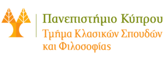

Άννα Παναγιώτου-Tριανταφυλλοπούλου
Kαθηγήτρια της Γλωσσολογίας
Μαθήματα
Εισαγωγικά και προχωρημένου επιπέδου μαθήματα
- ΑΓΛ 263. Ιστορική Γλωσσολογία Ι (Υποχρεωτικό μάθημα του προγράμματος, ΧΕ 1993 – ).
- ΑΓΛ 369. Ιστορική Γλωσσολογία ΙΙ (Υποχρεωτικό μάθημα του προγράμματος, ΕΕ 1994 – ).
- Γενική γλωσσολογία. Εισαγωγικό μάθημα στη θεωρητική γλωσσολογία.(ΕΕ 1994).
- ΒΝΕ 193. Εισαγωγή στη Νεοελληνική γλώσσα Ι (ΧΕ 1994, 1995, 1997, υποχρεωτικό μάθημα για το Τμήμα ΕΠΑ).
- ΑΓΛ 264. Εισαγωγικό μάθημα ελεύθερης επιλογής Τα ανθρωπωνύμια της αρχαίας Κύπρου(ΕΕ 2012).
Προπτυχιακά σεμινάρια
- ΑΓΛ 345. Αρχαία, μεσαιωνική και νεότερη κυπριακή διάλεκτος(ΧΕ 1994).
- ΑΓΛ 346. Αρχαία ελληνική διαλεκτολογία και επιγραφική, 8ος - 4ος αι. π.Χ. (ΕΕ 1996).
- ΑΓΛ 347. Μαγικά κείμενα και γλώσσα στον αρχαίο ελληνόφωνο κόσμο(ΧΕ 1996).
- ΑΓΛ 348. Αρχαία και νεότερη κυπριακή διάλεκτος. Μορφολογία (ΧΕ 1997).
- ΑΓΛ 360. Η συνεισφορά της προφορικής παράδοσης και της αλφαβητικής γραφής στη διάδοση των ομηρικών επών(ΧΕ 1998).
- ΑΓΛ 361. Η αρκαδοκυπριακή διάλεκτος(ΧΕ 1999).
- ΑΓΛ 362. Οι «ομολογίες» της Δυτικής Μ. Ασίας. Κοινωνιογλωσσολογική ανάλυση(ΧΕ 2000).
- ΑΓΛ 363. Αρχαία ελληνική ονοματολογία (ΧΕ 2001).
- ΑΓΛ 366. Αρχαίες λογοτεχνικές διάλεκτοι (ΧΕ 2004).
- ΑΓΛ 367. Παραγωγή και σύνθεση στον Ηρόδοτο (ΧΕ 2005).
- ΑΓΛ 457. Υποκοριστικά μορφήματα στον Αριστοφάνη. Μορφολογία και σημασία (ΧΕ 2006).
- ΑΓΛ 466. Πρώιμα ελληνικά αλφάβητα (ΧΕ 2007).
- AΓΛ 469. Συλλαβικές επιγραφές της αρχαίας Κύπρου: συντακτικά θέματα (XE 2009).
- AΓΛ 470. Η ελληνική της Β΄ χιλιετίας π.Χ. (EE 2010).
- AΓΛ 471. Η ιωνική διάλεκτος (XE 2010).
- ΑΓΛ 473. Προφορικότητα και εγγραμματοσύνη κατά την αρχαιότητα (ΕΕ 2013).
- ΑΓΛ 477. Η Μακεδονία στο έργο του Ηροδότου και του Θουκυδίδoυ: ιστορικά και γλωσσικά θέματα (ΧΕ 2013).
- ΑΓΛ 478. Η γλώσσα και το ύφος του Λουκιανού (XΕ 2014).
- ΑΓΛ 479. Αρχαία ελληνικά ανθρωπωνύμια και η ετυμολογία τους (ΧΕ 2015).
- ΑΓΛ 480. Επιγραφές από τη δυτ. Μ. Ασία: οι λεγόμενες ὁμολογίες (ΧΕ 2016).
- ΑΓΛ 481. Ἔργα καὶ ἡμέραι του Ησιόδου: γλώσσα και κοινωνία. (ΧΕ 2017).
- ΑΓΛ 482. Ησιόδου Θεογονία: θέματα γλώσσας και θρησκείας (ΧΕ 2018).
- ΑΓΛ 483. Ο Κρατύλος του Πλάτωνος και η ετυμολογική έρευνα (ΧΕ 2019).
Μεταπτυχιακά σεμινάρια
- ΑΓΛ 403. Ελληνική και λατινική επιγραφική (ΕΕ 1999).
- ΑΓΛ 604. Λατινική επιγραφική (ΕΕ 2000).
- ΑΓΛ 605. Αρχαίες ελληνικές διάλεκτοι και Κοινή, από τα μέσα του 4ου έως τα τέλη του 3ου αι. π.Χ. (ΧΕ 2000).
- ΑΓΛ 606. Αρχαία αιολική διάλεκτος (ΧΕ 2002).
- ΑΓΛ 607. Οι δωρικές διάλεκτοι (ΕΕ 2003).
- ΑΓΛ 608. Οι αχαϊκές διάλεκτοι (ΧΕ 2003).
- ΑΓΛ 610. Αλφαβητικές επιγραφές του ελληνόφωνου χώρου (EΕ 2004).
- ΑΓΛ 641. Δοτική: Μορφολογικά και συντακτικά θέματα (ΧΕ 2005).
- ΑΓΛ 662. Ονόματα γυναικών στον Όμηρο. Μορφολογία και σημασιολογία (ΧΕ 2006).
- ΑΓΛ 663. Επιγραφές της Μακεδονίας (ΧΕ 2007).
- ΑΓΛ 666. Γυναικεία ανθρωπωνυμία στον Ηρόδοτο (ΧΕ 2010).
- ΑΓΛ 602. Η λακωνική διάλεκτος (ΧΕ 2012).
- ΑΓΛ 603. Ελληνικές επιγραφές της Παμφυλίας (EΕ 2013).
- AΓΛ 604. Κυπριακές συλλαβικές επιγραφές (ΕΕ 2014).
- ΑΓΛ 605. Τα χρηστήρια ελάσματα της Δωδώνης (ΕΕ 2015).
- AΓΛ 606. Απελευθερωτικές επιγραφές ελληνιστικής και ρωμαϊκής περιόδου (ΧΕ 2015).
- AΓΛ 607. Μαγικά κείμενα της αρχαιότητας (ΧΕ 2016).
- AΓΛ 608. «Η μυκηναϊκή περίοδος και τα ομηρικά έπη» (ΧΕ 2017).
- ΑΓΛ 609. «Ἀριστοφάνης γελωτοποιῶν: κωμικά γλωσσικά στοιχεία και υφολογικοί τρόποι στην Αρχαία κωμωδία».
- ΑΓΛ 610. «Η ιωνική της ιπποκρατικής συλλογής» (ΧΕ 2019).